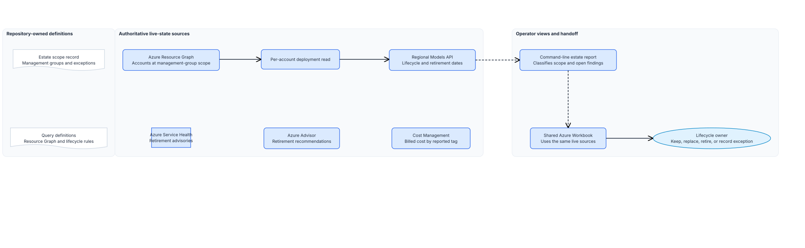

Chapter 2 of 6
Architecture at a glance#
The workbook gives operators a portal view. The report applies the governance rules and fails while findings stay open.
First, it runs foundry-accounts.kql against each approved management group through az graph query. Resource Graph returns every microsoft.cognitiveservices/accounts resource the caller can read, joined to ResourceContainers so each row carries its subscription name. Paging uses --first with the returned skip token, so a large tenant returns completely.
Second, it classifies each account against estate-scope.json. An account whose kind is in inScopeAccountKinds belongs to the AI estate and is checked for the required tags and an approved region. An account of another Cognitive Services kind is reported as adjacent, and becomes a finding unless it is a recorded exception. That second list is where unmanaged AI usually shows up.
Third, it lists the model deployments on each in-scope account with az cognitiveservices account deployment list, then reads the regional Models API. The report matches the account kind, model name, format, and version to record lifecycle status and inference or SKU retirement dates. It creates a finding when the API has no matching entry, a deployment is deprecated or retired, or a retirement date falls inside the configured warning window.
Fourth, it queries ServiceHealthResources for Azure AI retirement advisories and AdvisorResources for open service upgrade and retirement recommendations. Service Health signals what is changing. Advisor can identify affected in-scope accounts and provide the next action.
For cost, the report collects the distinct values of the cost tag across in-scope accounts. Cost Management is authoritative for the billed amount; those tag values are the filter that makes its view match this inventory.
The shared workbook uses the same Resource Graph tables and ARM endpoints to show account posture, deployments, model lifecycle, Foundry projects, retirement advisories, Advisor recommendations, and resource health. It exposes live state only. Use the report to decide whether a row is compliant with the recorded estate scope.

Design choices and tradeoffs#
| Decision | Chosen approach | Benefits | Costs and limitations |
|---|---|---|---|
| Estate read | One Resource Graph query per management group | Crosses subscriptions in one call and needs only Reader | Resource Graph lags Resource Manager by a short interval |
| Model layer | One CLI call per in-scope account | Returns the model, version, SKU, and capacity that Resource Graph omits | Run time grows with account count |
| Scope of the query | Every Cognitive Services account, classified afterwards | Surfaces accounts of an unexpected kind | The adjacent list needs triage, not just reading |
| Exceptions | Named in the scope record with an owner and expiry | A known account stops producing a finding without hiding it | An expired exception still needs a human review |
| Cost | Report the cost tag values, read the amount in Cost Management | Keeps one authoritative source for billed cost | The report cannot show spend on its own |
| Lifecycle | Models API plus Service Health and Azure Advisor | Detects model and service retirement signals after deployment | The lifecycle owner must assess a replacement against the workload |
| Operator view | Shared Workbook deployed with Bicep | Shows current estate and retirement state in the Azure portal | It does not replace the report's scope and exception checks |
| Output | Console summary, optional file outside the repository | No customer resource names enter source control | Trend analysis needs the operator to keep the files |
Architecture guidance#
Use Microsoft Foundry Models lifecycle and support policy for the Models API fields and Azure OpenAI Service retirement notifications.
Use Identify impacted resources for service retirements by using Azure Resource Graph for the Service Health, Resource Graph, and Advisor handoff.
Use Quickstart: Run Resource Graph query using Azure CLI for the resource-graph extension and management-group scope arguments.